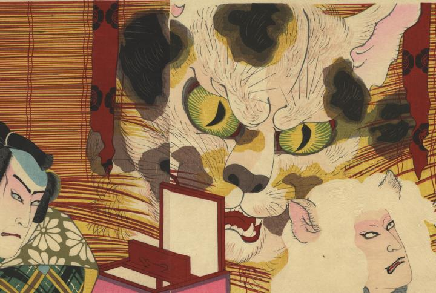

破れた御簾から出現した巨大な猫の頭。
著作者：梅堂國政／出典：親書誌：U426_nichibunken_0291： [五十三次扇宿附]；ゴジュウサンツギ オウギノシュクズケ／日付：2014／資源識別子：U426_nichibunken_0291_0002_0000
Copyright (c)2010- International Research Center for Japanese Studies, Kyoto, Japan. All rights reserved.